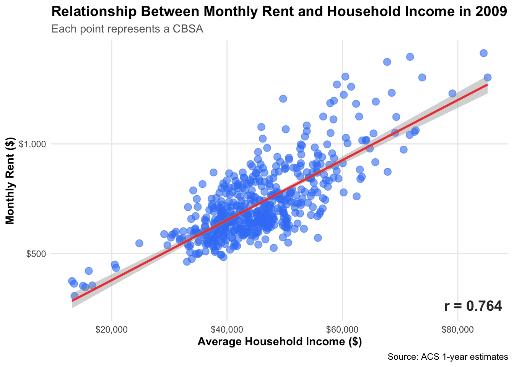
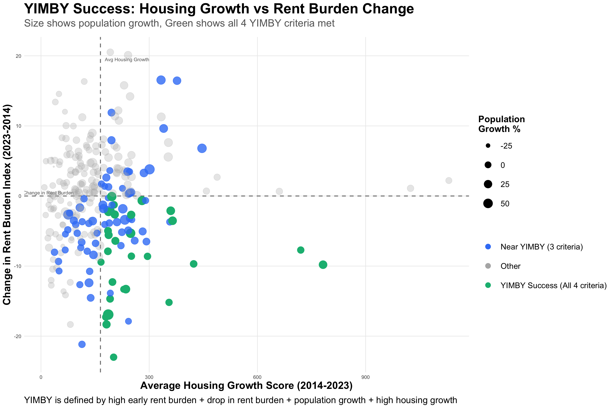
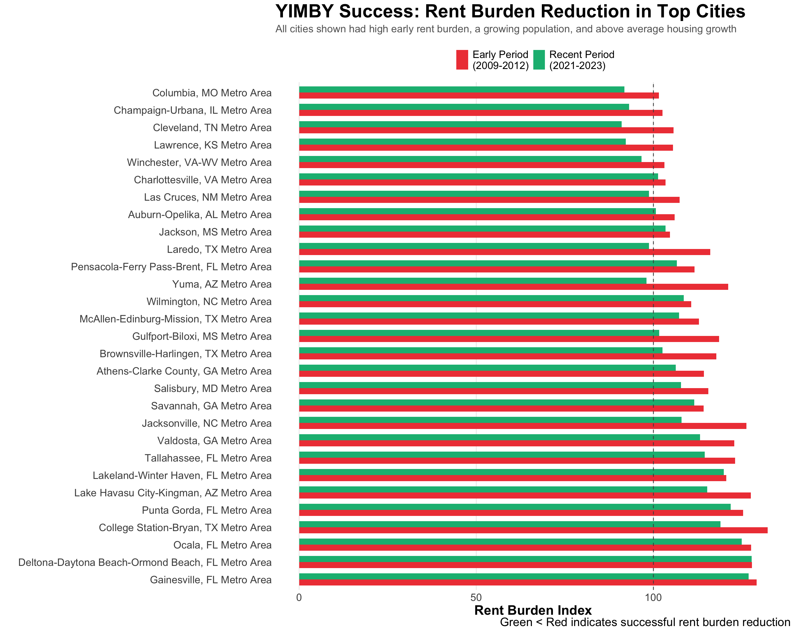

Welcome back! Today we will be analyzing US Census data, wages, and housing affordability and permits. Click on the code chunks below to expand or collapse code. Use the navigation bar on the right to navigate through the analysis and press release.
Yes In My Backyard, Yes In America: A Federal Path to Housing Abundance
Across the United States, the dream of homeownership is slipping further out of reach. Skyrocketing prices, stagnant wages, and a chronic shortage of new housing have created a perfect storm that’s reshaping communities and deepening inequality. From young families priced out of starter homes to seniors unable to downsize, millions are caught in a housing system that simply doesn’t build enough homes where people want to live. Decades of local barriers, outdated zoning rules, and community resistance have choked supply, leaving even high-demand cities struggling to keep up. The result is a national housing crisis, demanding bold federal leadership to help communities say “yes” to more homes. If you’re like me and dream of owning a home in New York, this should be nothing new to you.
NoteDid You Know?
Since 2019, the income needed to buy a single-family home has doubled (Figure 1).
Qualifying income for a mortgage on the median-priced U.S. home, $ in thousands
Executive Summary
What was once a foundation of the American dream and the best way to develop generational wealth for the middle and working class, is now becoming harder and harder. Housing is a necessity. And America is facing an affordability problem. With stagnating wages and increased cost of living, it is no longer possible to buy a house through sheer hard work, saving and investing paychecks. This is a supply problem: there are not enough homes and the wrong types of homes are being built that don’t meet current nor future demand. How can we as a country overcome this issue plaguing millions? We are Homes for All Americans™, a policy group focused on making homeownership more affordable through increased construction of houses. Our proposal is to strategically allocate federal funds to the most YIMBY cities, ones with a stable workforce and capacity to build new homes to alleviate the rent burden. We use specifically constructed indices to identify these cities. For this to be feasible, we have partnered with two Congressional representatives and labor unions to strengthen our case.
Primary Congressional Sponsor: Jasmine Crockett, Dallas Democrat, District 30
Our analysis shows that Texas has issued the most housing permits from 2010 to 2019 and from 2020 to 2023. The top two CBSA regions include the Houston-The Woodlands-Sugar Land metro area and the Dallas-Fort Worth-Arlington metro area. Jasmine Crockett, an outspoken and progressive representative in District 30, is our first choice for co-signing this bill. She sits on key committees including the House Committee on Oversight and Government Reform and the Judiciary Committee, which provides plenty of influence. The Dallas area has strong momentum over the last decade in terms of housing permits, responding to the migration to Texas. We’ve seen not only people move here, but companies such as Tesla relocate as well. This brings an influx of new jobs and opportunities and Dallas has been developing houses to meet the demand. Federal funding would continue to help propel this area into a powerhouse, with a boom in jobs, industry and affordability.
Show code
# load DT packageensure_package(DT)# calculate total permits by CBSA for 2010-2019permits_2010s <- PERMITS %>%filter(year >=2010, year <=2019) %>%#focus on 2010 - 2019 rangegroup_by(CBSA) %>%summarize(total_permits =sum(new_housing_units_permitted, na.rm =TRUE)) %>%#sum total housing permits by cbsa herearrange(desc(total_permits))# join with INCOME to get CBSA namespermits_with_names <- permits_2010s %>%left_join( #perform left join with income and permits INCOME %>%filter(year ==2019) %>%#filter for 2019mutate(CBSA =as.integer(GEOID)) %>%#convert GEOID to integer bc it may be a string and give issuesselect(CBSA, NAME),by ="CBSA" ) %>%select(NAME, CBSA, total_permits) %>%. #join on income with cbsa name and geoidrename(`CBSA Name`= NAME, #rename columns`CBSA Code`= CBSA,`Total Permits (2010-2019)`= total_permits )## sort by total permits descending, with highest on toppermits_with_names <- permits_with_names %>%arrange(desc(`Total Permits (2010-2019)`)) # display in datatable to make it cleanerdatatable( permits_with_names,options =list(dom ='t', # only show the tablepaging =FALSE, searching =FALSE, # remove search barorder =list(list(3, 'desc')) # Column index 3rd column, since R is 0 index based ),caption ="CBSAs Ranked by Total New Housing Permits (2010-2019)") %>%formatCurrency('Total Permits (2010-2019)', currency ="", digits =0)
Show code
# load DT packageensure_package(DT)# calculate total permits issued from 2020 to 2023 by cbsapermits_2010s <- PERMITS %>%filter(year >=2020, year <=2023) %>%#filter for yearsgroup_by(CBSA) %>%#group data by cbsa summarize(total_permits =sum(new_housing_units_permitted, na.rm =TRUE)) %>%# sum up the total number of new permits for each cbsaarrange(desc(total_permits)) # sort highest to lowest# join permit with income permits_with_names <- permits_2010s %>%left_join( INCOME %>%filter(year ==2023) %>%#filter on most recent yearmutate(CBSA =as.integer(GEOID)) %>%##convert GEOID to integer bc it may be a string and give issuesselect(CBSA, NAME), # keep these columnsby ="CBSA" ) %>%select(NAME, CBSA, total_permits) %>%# rename columnsrename(`CBSA Name`= NAME,`CBSA Code`= CBSA,`Total Permits (2020-2023)`= total_permits )# sort by highest permitspermits_with_names <- permits_with_names %>%arrange(desc(`Total Permits (2020-2023)`)) #show results in tabledatatable( permits_with_names,options =list(dom ='t', # only show tablepaging =FALSE, searching =FALSE, #no search barorder =list(list(3, 'desc')) # sort by the 3rd column bc of 0 based indexing ),caption ="CBSAs Ranked by Total New Housing Units Permitted (2010-2019)") %>%# show formatted numbers with no decimalsformatCurrency('Total Permits (2010-2019)', currency ="", digits =0)
Congressional Co-Sponsor: Sam Liccardo, San Jose Democrat, District 16
While California is not the worst in terms of issuing housing permits, it is the top state where monthly rent is overwhelming for working class families. In fact, monthly rent is nearing $3,000 on an average salary of $153,000 in the San Jose area. That’s 30% of your income gone just to rent, not factoring in other bills and utilities. In 2023, it issued only 6,227 permits, a small amount compared to other counties. San Jose can benefit tremendously from federal funding, as it is one of the main cities where tech startups flourish. The influx of workers coming in to work for companies, combined with low supply of housing has led to a huge imbalance between rent, homes and wages. We believe Sam Liccardo would be a great advocate for our bill, as it would be in his best interest to help alleviate the pain for his constituents.
Show code
# Join all 5 tables, convert all GEOID to string so they're all same datatypeall_data <- INCOME %>%mutate(GEOID =as.character(GEOID)) %>%full_join( #do a full join for now RENT %>%mutate(GEOID =as.character(GEOID)), by =c("GEOID", "NAME", "year") #match on these columns ) %>%full_join( POPULATION %>%mutate(GEOID =as.character(GEOID)), by =c("GEOID", "NAME", "year") #match on these columns ) %>%full_join( HOUSEHOLDS %>%mutate(GEOID =as.character(GEOID)), by =c("GEOID", "NAME", "year") #match on these columns ) %>%full_join( PERMITS %>%mutate(GEOID =as.character(CBSA)),by =c("GEOID", "year") #match on these columns )all_data %>%filter(year ==2023) %>%arrange(desc(monthly_rent)) #filter for 2023 and sort by highest monthly rent
Labour Unions and Interest Groups: Food Services and Healthcare
We aim to focus on these two groups as we believe they will significantly benefit from increased housing supply. Food services are one of the most underpaid professions, while healthcare workers work long hours for moderate pay. Having support from two groups will strengthen our case. By increasing supply of housing, we seek to bring down rent and therefore allow breathing room for food service workers On the other side, bringing down rent allows for more disposable income for health care workers, who in turn will invest that money back into the economy through purchases. There are over 230,000 nurses in Texas and over 1.2 million workers employed in the restaurants industry. Meanwhile, 25.1% of California’s workforce is in food services and 6.8% in the nursing industry. These are two industries that are pivotal to both states’ wellbeing and having a large base will only increase our support.
Show code
## combine wages with industry on the level4 code column. make sure they are the same datatypewage_industry <- WAGES %>%mutate(INDUSTRY =as.character(INDUSTRY)) %>%left_join(INDUSTRY_CODES %>%mutate(level4_code =as.character(level4_code)),by =c("INDUSTRY"="level4_code"))#filter for 2023 where avg wage is not infinite, the level1 title is not null. sort by number of employed individualswage_industry %>%filter(YEAR ==2023, !is.infinite(AVG_WAGE), !is.na(level1_title)) %>%arrange(desc(EMPLOYMENT))%>%print(n =50)
Metrics for Evaluation: Rent Burden Index and Population Growth Index
To assess and quantify the impacts of increased rent and reduced housing supply, we developed two indices. Our Rent Burden Index essentially tracks the growth of monthly rent relative to monthly income. If everything stays steady, you would have the same purchasing power as you did back in 2009.
Our composite growth index anticipates population growth over five years and current population, creating a metric that tracks how well permits are growing relative to population growth. If permits are growing, that means a city is doing well to meet the demands of its population. Together, we use these indices to evaluate the most YIMBY friendly cities where rent burden has decreased, housing growth as increased and residents are overall happier. We use Missouri, Maryland, Georgia, Florida and Texas as success stories that can be emulated across other states like California.
Why This Matters
San Jose is one of the worst areas for residents as they battle high rent, moderate income and low housing permits. On the other hand Houston and Dallas have shown that you can embrace a growing population, issue permits and build homes. According to the census, there are 170k young people between the ages of 18-34 just in the San Jose area and over 3.5 million in the greater CA Metro area. This demographic, a majority of which works in the food services sector, stands to gain tremendously from increased housing permits. From higher disposable income to finally being able to own a home, this bill would help young people significantly. We have seen a migration from California as residents leave for more appealing cities. To ensure the wellbeing of San Jose and other cities within this state, it’s imperative that we issue more permits.
Show code
library(tidycensus)# Get young adult population (18-34 year olds) from ACS for 2023# I have a census API key so I'll comment this out#census_api_key("xyz", install = TRUE, overwrite=TRUE)young_adults <-get_acs(geography ="cbsa",variables =c("B01001_006", # Male 18-19"B01001_007", # Male 20-24"B01001_008", # Male 25-29"B01001_009", # Male 30-34"B01001_030", # Female 18-19"B01001_031", # Female 20-24"B01001_032", # Female 25-29"B01001_033"# Female 30-34 ),year =2023,survey ="acs1") %>%group_by(GEOID, NAME) %>%#group by geoid bc we want to see san josesummarize(young_adult_pop =sum(estimate, na.rm =TRUE), .groups ='drop') #sum population for each cbsafiltered_data_city <- young_adults %>%#filter for san josefilter(str_detect(NAME, "San Jose"))filtered_data_state <- young_adults %>%filter(str_detect(NAME, "CA Metro Area")) %>%#sum for all of CA populationsummarize(total =sum(young_adult_pop, na.rm =TRUE))
Thank you for following along in this effort to make America a place where everyone can afford to live, work, and thrive. The housing crisis didn’t happen overnight nor will it be solved without bold, coordinated action. But by empowering local communities to say “yes” to more homes, Congress can help unlock a new era of opportunity, mobility, and growth. Every new home built is a step toward a more inclusive and prosperous nation. And together, we can make “Yes In My Backyard” the policy of the future.
Exploratory Analysis
Our analysis is based on publicly available data from the government. Follow along below to see what this data encompasses and what it can tell us about affordability. Before we get started, check out the code below to see where this data is coming from:
Show code
#professor's existing code, no need for additional commentsif(!dir.exists(file.path("data", "mp02"))){dir.create(file.path("data", "mp02"), showWarnings=FALSE, recursive=TRUE)}ensure_package <-function(pkg){ pkg <-as.character(substitute(pkg))options(repos =c(CRAN ="https://cloud.r-project.org"))options(timeout =1000)if(!require(pkg, character.only=TRUE, quietly=TRUE)) install.packages(pkg)stopifnot(require(pkg, character.only=TRUE, quietly=TRUE))}ensure_package(tidyverse)ensure_package(glue)ensure_package(readxl)ensure_package(tidycensus)get_acs_all_years <-function(variable, geography="cbsa",start_year=2009, end_year=2023){ fname <-glue("{variable}_{geography}_{start_year}_{end_year}.csv") fname <-file.path("data", "mp02", fname)if(!file.exists(fname)){ YEARS <-seq(start_year, end_year) YEARS <- YEARS[YEARS !=2020] # Drop 2020 - No survey (covid) ALL_DATA <-map(YEARS, function(yy){ tidycensus::get_acs(geography, variable, year=yy, survey="acs1") |>mutate(year=yy) |>select(-moe, -variable) |>rename(!!variable := estimate) }) |>bind_rows()write_csv(ALL_DATA, fname) }read_csv(fname, show_col_types=FALSE)}# Household income (12 month)INCOME <-get_acs_all_years("B19013_001") |>rename(household_income = B19013_001)# Monthly rentRENT <-get_acs_all_years("B25064_001") |>rename(monthly_rent = B25064_001)# Total populationPOPULATION <-get_acs_all_years("B01003_001") |>rename(population = B01003_001)# Total number of householdsHOUSEHOLDS <-get_acs_all_years("B11001_001") |>rename(households = B11001_001)
#professor's existing code, no need for additional commentsensure_package(httr2)ensure_package(rvest)get_bls_qcew_annual_averages <-function(start_year=2009, end_year=2023){ fname <-glue("bls_qcew_{start_year}_{end_year}.csv.gz") fname <-file.path("data", "mp02", fname) YEARS <-seq(start_year, end_year) YEARS <- YEARS[YEARS !=2020] # Drop Covid year to match ACSif(!file.exists(fname)){ ALL_DATA <-map(YEARS, .progress=TRUE, possibly(function(yy){ fname_inner <-file.path("data", "mp02", glue("{yy}_qcew_annual_singlefile.zip"))if(!file.exists(fname_inner)){request("https://www.bls.gov") |>req_url_path("cew", "data", "files", yy, "csv",glue("{yy}_annual_singlefile.zip")) |>req_headers(`User-Agent`="Mozilla/5.0 (Macintosh; Intel Mac OS X 10.15; rv:143.0) Gecko/20100101 Firefox/143.0") |>req_retry(max_tries=5) |>req_perform(fname_inner) }if(file.info(fname_inner)$size <755e5){warning(sQuote(fname_inner), "appears corrupted. Please delete and retry this step.") }read_csv(fname_inner, show_col_types=FALSE) |>mutate(YEAR = yy) |>select(area_fips, industry_code, annual_avg_emplvl, total_annual_wages, YEAR) |>filter(nchar(industry_code) <=5, str_starts(area_fips, "C")) |>filter(str_detect(industry_code, "-", negate=TRUE)) |>mutate(FIPS = area_fips, INDUSTRY =as.integer(industry_code), EMPLOYMENT =as.integer(annual_avg_emplvl), TOTAL_WAGES = total_annual_wages) |>select(-area_fips, -industry_code, -annual_avg_emplvl, -total_annual_wages) |># 10 is a special value: "all industries" , so omitfilter(INDUSTRY !=10) |>mutate(AVG_WAGE = TOTAL_WAGES / EMPLOYMENT) })) |>bind_rows()write_csv(ALL_DATA, fname) } ALL_DATA <-read_csv(fname, show_col_types=FALSE) ALL_DATA_YEARS <-unique(ALL_DATA$YEAR) YEARS_DIFF <-setdiff(YEARS, ALL_DATA_YEARS)if(length(YEARS_DIFF) >0){stop("Download failed for the following years: ", YEARS_DIFF, ". Please delete intermediate files and try again.") } ALL_DATA}WAGES <-get_bls_qcew_annual_averages()
Data Relationship Diagram
We have a lot of datasets, each stored within a variable (total of seven). Let’s see how they all relate to each other. Below is a screenshot, mapping the relationship between each table using primary keys. For an interactive experience, you can visit the following link: View Interactive Diagram
Now that we have a good visual understanding of the datasets and their relationship with each other, let’s go through some initial exploratory data analysis
Which CBSA (by name) permitted the largest number of new housing units in the decade from 2010 to 2019 (inclusive)?
Show code
# install DT package ensure_package(DT)# calculate total permits issued between 2010 and 2019 by cbsapermits_2010s <- PERMITS %>%# filter for 2010 through 2019filter(year >=2010, year <=2019) %>%group_by(CBSA) %>%#group the data by cbsasummarize(total_permits =sum(new_housing_units_permitted, na.rm =TRUE)) %>%#sum all the new housing units permitted within each cbsaarrange(desc(total_permits)) #sort highest to lowest#join the permit with income permits_with_names <- permits_2010s %>%left_join(INCOME %>%filter(year ==2019) %>%# keep only data from 2019 to get latest cbsa namesmutate(CBSA =as.integer(GEOID)) %>%##convert GEOID to integer bc it may be a string and give issuesselect(CBSA, NAME), #keep these columnsby ="CBSA" ) %>%select(NAME, CBSA, total_permits) %>%#select columns for the tablerename(`CBSA Name`= NAME, `CBSA Code`= CBSA, `Total Permits (2010-2019)`= total_permits) #rename columns # sort, then take only the top 5 cbsaspermits_with_names <- permits_with_names %>%arrange(desc(`Total Permits (2010-2019)`)) %>%head(5)# display top 5 cbsas datatable( permits_with_names,options =list(dom ='t', # only show the table paging =FALSE, # show all rows at oncesearching =FALSE, #no search functionorder =list(list(3, 'desc')) #sort by 3rd column which is actually 0 indexed ),caption ="CBSAs Ranked by Total New Housing Units Permitted (2010-2019)") %>%# format the total permits column to show clean numbers without decimalsformatCurrency('Total Permits (2010-2019)', currency ="", digits =0)
In what year did Albuquerque, NM (CBSA Number 10740) permit the most new housing units?
NoteNote
It’s important to note that 2020 was a Covid year and may skew the results. We can see that Albuquerque, NM issued the most permits in 2021. 4,021 to be precise. But this may be due to excess backlogs and pent up demand from the prior year.
Show code
# filter for Albuquerque and find year with most permitsalbuquerque_permits <- PERMITS %>%filter(CBSA ==10740) %>%arrange(desc(new_housing_units_permitted)) %>%head(3) #show top 3, sorted by highest# show in tabledatatable( albuquerque_permits %>%rename( #rename columns`CBSA Code`= CBSA,`New Housing Units Permitted`= new_housing_units_permitted,Year = year ), options =list(dom ='t', # Only show the tablepaging =FALSE, searching =FALSE), #no search barcaption ="Albuquerque, NM (CBSA 10740) - Housing Permits by Year (Excluding 2020)") %>%#format to nice numbersformatCurrency('New Housing Units Permitted', currency ="", digits =0)
Which state (not CBSA) had the highest average individual income in 2015?
The District of Columbia in 2015 had the highest average individual income of $33,232.88, followed by Massachusetts and Connecticut ($27,620.62, $27,194.05 respectively).
Show code
# Create state lookup dataframe to remap abbreviations. essentially a dictionarystate_df <-data.frame(abb =c(state.abb, "DC", "PR"),name =c(state.name, "District of Columbia", "Puerto Rico"))# calculate for 2015state_income_2015 <- INCOME %>%filter(year ==2015) %>%# join with HOUSEHOLDS to get household countleft_join(HOUSEHOLDS %>%filter(year ==2015), #get state from CBSA nameby =c("GEOID", "NAME", "year")) %>%mutate(state =str_extract(NAME, ", (.{2})", group=1)) %>%# calculate total income per CBSAmutate(total_income = household_income * households) %>%left_join(POPULATION %>%filter(year ==2015) %>%select(GEOID, population), # get population for each CBSAby ="GEOID") %>%filter(!is.na(state), !is.na(total_income), !is.na(population)) %>%# remove NAs# sum by stategroup_by(state) %>%summarize(total_income =sum(total_income, na.rm =TRUE),total_population =sum(population, na.rm =TRUE) ) %>%# calculate average individual incomemutate(avg_individual_income = total_income / total_population) %>%arrange(desc(avg_individual_income)) %>%# join with state namesleft_join(state_df, by =c("state"="abb")) %>%head(5)# show as datatabledatatable( state_income_2015 %>%select(name, state, avg_individual_income, total_population) %>%rename(`State`= name,`Abbreviation`= state,`Average Individual Income`= avg_individual_income,`Total Population`= total_population ),options =list(dom ='t', # only show the tablepaging =FALSE, searching =FALSE#no search bar ),caption ="States Ranked by Average Individual Income (2015)") %>%formatCurrency('Average Individual Income', currency ="$", digits =2) %>%formatCurrency('Total Population', currency ="", digits =0) #format cleanly
What is the last year in which the NYC CBSA had the most data scientists in the country?
This would be in 2009, with a total of 16,349 data scientists
Show code
# naics code 5182 for data scientists and business analystsdata_scientists_by_cbsa <- WAGES %>%filter(INDUSTRY ==5182) %>%mutate(std_cbsa =paste0(FIPS, "0")) %>%#match cbsa code with other datasets by adding a 0group_by(std_cbsa, YEAR) %>%#group by cbsa and yearsummarize(total_employment =sum(EMPLOYMENT, na.rm =TRUE), .groups ='drop') # sum total number of employees for each cbsa-year# pull cbsa names from the income table so we can join them to the wage datacbsa_names <- INCOME %>%filter(year ==2019) %>%#filter for 2019 to get latest namesmutate(std_cbsa =paste0("C", GEOID)) %>%# create a matching cbsa id format by adding c to geoidselect(std_cbsa, NAME) #only keep these namestop_ds_by_year <- data_scientists_by_cbsa %>%# combine employment with cbsa and find the top cbsa left_join(cbsa_names, by ="std_cbsa") %>%# join cbsa to the employment # group by year group_by(YEAR) %>%slice_max(total_employment, n =1) %>%# pick cbsa with the highest total employment per yearungroup() %>%#remove groupingarrange(YEAR) %>%# sort results by year in ascending orderselect(YEAR, NAME, total_employment) %>%# keep these columns # rename columns rename(Year = YEAR,`CBSA Name`= NAME,`Data Scientists (Employment)`= total_employment ) %>%# keep just the first row slice(1)# display the top cbsadatatable( top_ds_by_year,options =list(dom ='t', # only show the table paging =FALSE, # display all rows at oncesearching =FALSE#no search bar ),caption ="CBSA with Most Data Scientists by Year (NAICS 5182)") %>%# format the employment numbersformatCurrency('Data Scientists (Employment)', currency ="", digits =0)
What fraction of total wages in the NYC CBSA was earned by people employed in the finance and insurance industries (NAICS code 52)? In what year did this fraction peak?
Unfortunately there is no data for this
Show code
# nyc cbsa code is 35620# naics code 52 = finance and insurancenyc_wages <- WAGES %>%# get total wages for all industries in nyc by yearfilter(str_detect(FIPS, "35620")) %>%#use str detect to find fip for nycgroup_by(YEAR) %>%#group by year and sumsummarize(total_wages_all =sum(TOTAL_WAGES, na.rm =TRUE),.groups ='drop' )nyc_finance_wages <- WAGES %>%# get wages specifically for finance and insurance in nycfilter(str_detect(FIPS, "35620")) %>%#use str detect to find fip for nycfilter(str_starts(as.character(INDUSTRY), "52")) %>%group_by(YEAR) %>%#group by year and sumsummarize(finance_wages =sum(TOTAL_WAGES, na.rm =TRUE),.groups ='drop' )nyc_finance_fraction <- nyc_wages %>%left_join(nyc_finance_wages, by ="YEAR") %>%#oin finance wages the total wages mutate(finance_fraction = finance_wages / total_wages_all, #calculate finance wage percentage out of total wagefinance_pct = finance_fraction *100 ) %>%arrange(desc(finance_fraction)) #sort# display datatabledatatable( nyc_finance_fraction %>%# rename columns rename(Year = YEAR,`Total Wages (All Industries)`= total_wages_all,`Finance & Insurance Wages`= finance_wages,`Finance Fraction`= finance_fraction,`Finance Percentage`= finance_pct ) %>%# sort arrange(Year),options =list(dom ='t', # only show the tablepaging =FALSE, #show all rowssearching =FALSE# hide search bar ),caption ="NYC CBSA: Finance & Insurance Wages as Fraction of Total (NAICS 52)") %>%# format total wages columns as dollars with no decimalsformatCurrency('Total Wages (All Industries)', currency ="$", digits =0) %>%formatCurrency('Finance & Insurance Wages', currency ="$", digits =0) %>%formatPercentage('Finance Fraction', digits =2) %>%formatRound('Finance Percentage', digits =2)
Visualizations
Show code
# Join RENT and INCOME data for 2009rent_income_2009 <- RENT %>%filter(year ==2009) %>%#filter for yearinner_join( INCOME %>%filter(year ==2009),by =c("GEOID", "NAME", "year") #join on these columns ) %>%filter(!is.na(monthly_rent), !is.na(household_income)) #exclude nacor_value <-cor(rent_income_2009$household_income, rent_income_2009$monthly_rent, use ="complete.obs") #calculate correlation# create scatterplot with trend line. adjust key points like font, labels, colors, text, sizeggplot(rent_income_2009, aes(x = household_income, y = monthly_rent)) +geom_point(alpha =0.6, size =3, color ="#3b82f6") +geom_smooth(method ="lm", se =TRUE, color ="#ef4444", linewidth =1) +annotate("text", x =Inf, y =-Inf, # position at bottom right, assign colorslabel =paste0("r = ", round(cor_value, 3)), hjust =1.1, vjust =-1, size =5, fontface ="bold",color ="gray20") +labs( #labelstitle ="Relationship Between Monthly Rent and Household Income in 2009",subtitle ="Each point represents a CBSA",x ="Average Household Income ($)",y ="Monthly Rent ($)",caption ="Source: ACS 1-year estimates" ) +scale_x_continuous(labels = scales::dollar_format()) +scale_y_continuous(labels = scales::dollar_format()) +theme_minimal() +theme( #adjust key points like font, labels, colors, text, sizeplot.title =element_text(face ="bold", size =14),plot.subtitle =element_text(size =11, color ="gray40"),axis.title =element_text(face ="bold"),panel.grid.minor =element_blank() )

Show code
# Get total employment by CBSA and year #| fig-width: 15 #set dimensions of figure#| fig-height: 15#sum wages by fips and yeartotal_employment <- WAGES %>%group_by(FIPS, YEAR) %>%summarize(total_emp =sum(EMPLOYMENT, na.rm =TRUE), .groups ='drop')# Get healthcare employment, NAICS 62. sum by fips and yearhealthcare_employment <- WAGES %>%filter(str_starts(as.character(INDUSTRY), "62")) %>%group_by(FIPS, YEAR) %>%summarize(healthcare_emp =sum(EMPLOYMENT, na.rm =TRUE), .groups ='drop')# inner join and filter where employment is greater than 0 employment_data <- total_employment %>%inner_join(healthcare_employment, by =c("FIPS", "YEAR")) %>%filter(total_emp >0, healthcare_emp >0)# plot facet plot showing regression across yearsggplot(employment_data, aes(x = total_emp, y = healthcare_emp)) +geom_point(alpha =0.6, size =2, color ="#3b82f6") +#size and colorgeom_smooth(method ="lm", se =TRUE, color ="#ef4444", linewidth =0.8) +#line widthfacet_wrap(~YEAR, ncol =3) +labs( #labels title ="Change in Healthcare vs Total Employment",subtitle ="Each panel shows a different year; each point is a CBSA",x ="Total Employment",y ="Healthcare Employment",caption ="Source: BLS QCEW Annual Averages" ) +scale_x_continuous(labels = scales::comma_format()) +scale_y_continuous(labels = scales::comma_format()) +theme_minimal(base_size =12) +# font sizetheme( #title, axis, subtitle, text label font sizeplot.title =element_text(face ="bold", size =16), plot.subtitle =element_text(size =12, color ="gray40"), axis.title =element_text(face ="bold", size =11), axis.text =element_text(size =9), strip.text =element_text(face ="bold", size =11), panel.grid.minor =element_blank(), axis.text.x =element_text(angle =45, hjust =1))
Show code
#install gghighlight package if it's not already installedensure_package(gghighlight)#calculate average household size by dividing population by number of householdshousehold_size <- POPULATION %>%inner_join(HOUSEHOLDS, by =c("GEOID", "NAME", "year")) %>%#join with households to get household counts for each cbsa and yearmutate(avg_household_size = population / households) %>%#alculate average household sizefilter(!is.na(avg_household_size), avg_household_size >0) #remove any rows with missing datahousehold_size_highlighted <- household_size %>%# create highlighted version for plotting with custom groups# assign each cbsa to a highlight groupmutate(highlight_group =case_when(str_detect(NAME, "NY-NJ-PA Metro Area") ~"New York City", # highlight nyc metro area str_detect(NAME, "Los Angeles") ~"Los Angeles", # highlight los angeles TRUE~"Other CBSAs"#everything else is Other ) )#line plot of average household size over timeggplot(household_size_highlighted, aes(x = year, y = avg_household_size, group = NAME, color = highlight_group)) +#draw lines and vary transparency and linewidth by highlight groupgeom_line(aes(alpha = highlight_group, linewidth = highlight_group)) +# set colors for each groupscale_color_manual(values =c("New York City"="#ef4444", "Los Angeles"="#3b82f6", "Other CBSAs"="gray70"),name ="" ) +#set transparency scale_alpha_manual(values =c("New York City"=1, "Los Angeles"=1, "Other CBSAs"=0.3),guide ="none" ) +#set line thickness scale_linewidth_manual(values =c("New York City"=1.2, "Los Angeles"=1.2, "Other CBSAs"=0.5),guide ="none" ) +#labels labs(title ="Average Household Size Across U.S. Metropolitan Areas",subtitle ="New York City and Los Angeles highlighted from 2009 to 2023",x ="Year",y ="Average Household Size",caption ="Source: ACS 1-year estimates" ) +# set x-axis breaks every 2 yearsscale_x_continuous(breaks =seq(2009, 2023, 2)) +theme_minimal() +theme( #adjust title, subtitle, legend, etc font size colors etcplot.title =element_text(face ="bold", size =16, margin =margin(b =5)),plot.subtitle =element_text(size =12, color ="gray40", margin =margin(b =15)),plot.caption =element_text(size =9, color ="gray50", hjust =0, margin =margin(t =10)),axis.title =element_text(face ="bold", size =12),axis.text =element_text(size =10),legend.position ="bottom",legend.text =element_text(size =11),panel.grid.minor =element_blank(), # remove grid linespanel.grid.major =element_line(color ="gray90"), # light gray major grid lines )
Building Indices of Housing Affordability and Housing Stock Growth
Rent Burden Index
Everyone can feel the rising cost of living over the last decade. But how does it look from the data perspective? To quantify how much rent has risen and it’s impact, we have created a Rent Burden Index, pegged to 2009. Our methodology is explained below:
We took the income, rent and population for each CBSA and adjusted on a monthly basis. This meant dividing the average yearly income by 12 to get a monthly number. We then created a rent to income ratio that divides the monthly rent needed by the monthly income earned. It’s important to factor in population as well, given that populations change over time and people migrate across cities. This meant creating a weighted average of the rent to income ratio and population of the entire United States in 2009. This baseline is the foundation of our index. For every year, we divide the rent to income by the 2009 baseline to get a standardized metric that shows how rent has increased.
Baseline (2009 National Average): 0.2005 or 20.1 % of income Rent Burden Index = (Monthly Rent / Monthly Income) / 2009 National Baseline * 100
Index = 100: Same rent burden as 2009 national average
Index < 100: Lower rent burden than 2009 baseline
Index > 100: Higher rent burden than 2009 baseline
Index = 120: Rent burden is 20% higher than 2009 baseline
Let’s take a look at the NY-NJ-PA area for example. We can see that even in 2009, residents were already paying 7% over the national average. A 10% increase over 14 years doesn’t seem bad does it? We have to be careful as certain cities have their own rules and patterns. For starters, this CBSA has been renamed several times over the last decade, most recently dropping PA from the NY-NJ-PA area. Secondly, how many people do you know making nearly $8,000 a month and paying ~$1,700 in rent? It’s very very rare. With the exception of a few outliers, the majority of American cities have seen a spike in monthly rent, from 20% to as high as 55%.
Show code
#join income, rent and popoulation where income and rent are not misisngrent_burden_data <- INCOME %>%inner_join(RENT, by =c("GEOID", "NAME", "year")) %>%inner_join(POPULATION, by =c("GEOID", "NAME", "year")) %>%filter(!is.na(household_income), !is.na(monthly_rent))#calculate rent to income ratio (monthly rent / monthly income)rent_burden_data <- rent_burden_data %>%mutate(monthly_income = household_income /12,raw_rent_to_income = monthly_rent / monthly_income )#calculate national average in first year (2009) as baseline, use a weighted mean relative to populationbaseline_2009 <- rent_burden_data %>%filter(year ==2009) %>%summarize(baseline =weighted.mean(raw_rent_to_income, population, na.rm =TRUE)) %>%pull(baseline)#standardize rent metric. at 2009, it should be 100rent_burden_data <- rent_burden_data %>%mutate(rent_burden_index = (raw_rent_to_income / baseline_2009) *100 )#show table with rent burden index in nyc over timenyc_rent_burden <- rent_burden_data %>%filter(str_detect(NAME, "New York")) %>%arrange(year) %>%select(year, NAME, monthly_rent, monthly_income, raw_rent_to_income, rent_burden_index) %>%#select columns we wantmutate(rent_pct_of_income = raw_rent_to_income *100#convert to percentage ) %>%select( #assign values to each columnsYear = year,`Monthly Rent`= monthly_rent,`Monthly Income`= monthly_income,`Rent % of Income`= rent_pct_of_income,`Rent Burden Index`= rent_burden_index )datatable( nyc_rent_burden,options =list(pageLength =15), #show 15 entriescaption ="Rent Burden Over Time: NY-NJ-PA Metro Area (Baseline: 2009 National Average = 100)"#labesl) %>%formatCurrency(c('Monthly Rent', 'Monthly Income'), currency ="$", digits =0) %>%formatRound('Rent % of Income', digits =1) %>%formatRound('Rent Burden Index', digits =1) #format numbers
Now let’s take a look at the highest and lowest rent burdened areas across the country
Highest Rent Burdened Cities
Show code
# filter rent burden data for 2023 and rankrent_2023_ranked <- rent_burden_data %>%filter(year ==2023) %>%arrange(desc(rent_burden_index)) %>%#sort by highest rent burden indexmutate(rank =row_number()) %>%#get ranking of row number mutate(`Rent % of Income`= raw_rent_to_income *100) #get percentage of rent income# create table for top 10 highest rent burden cbsashighest_rent_burden_2023 <- rent_2023_ranked %>%filter(rank <=10) %>%select( #assign all columns to values`CBSA Name`= NAME,`Monthly Rent`= monthly_rent,`Monthly Income`= monthly_income,`Rent % of Income`=`Rent % of Income`,`Rent Burden Index`= rent_burden_index )# display highest rent burden tabledatatable( highest_rent_burden_2023,options =list( #show only 10 entriespageLength =10,order =list(list(0, 'asc')) ),caption ="Top 10 Metropolitan Areas with Highest Rent Burden in 2023") %>%formatCurrency(c('Monthly Rent', 'Monthly Income'), currency ="$", digits =0) %>%formatRound('Rent % of Income', digits =1) %>%#format for clean numbersformatRound('Rent Burden Index', digits =1)
Lowest Rent Burdened Cities
Show code
# create table for the top 10 lowest rent burden cbsaslowest_rent_burden_2023 <- rent_2023_ranked %>%filter(rank >n() -10) %>%#get bottom 10 lowest rent burden citiesselect( #assign all columns to values`CBSA Name`= NAME,`Monthly Rent`= monthly_rent,`Monthly Income`= monthly_income,`Rent % of Income`=`Rent % of Income`,`Rent Burden Index`= rent_burden_index )# display lowest rent burden tabledatatable( lowest_rent_burden_2023,options =list(pageLength =10, #only 10 entriesorder =list(list(0, 'asc')) ),caption ="Top 10 Metropolitan Areas with Lowest Rent Burden in 2023") %>%formatCurrency(c('Monthly Rent', 'Monthly Income'), currency ="$", digits =0) %>%formatRound('Rent % of Income', digits =1) %>%#cleanly format numbersformatRound('Rent Burden Index', digits =1)
Housing Growth
Now that we have quantified a way to measure the rent burden over the years, let’s look at the most YIMBY cities. Is there a correlation between cities with a lower rent burden and the number of housing permits handed out? In fact, if we can find the cities where permits are growing faster than the population, we can assume that these are the most affordable places to live. For this analysis, we rely on a few constructed metrics to determine growth: an instantaneous metric that is based on a point in time year and a rate based metric that looks back five years to determine growth rate. Follow along for our methodology:
We start with calculating the population growth over five years from 2009 and starting at 2014. Then we determine new housing permits per 1000 residents for each CBSA and get the median number of permits for 2014. It’s important to rely on median here, as we have seen that high and low number of permits can skew the national average. Our instant growth index measures absolute housing supply relative to population.
Baseline: 2014 national median = 2.86 Instant Growth Index = (New permits issued / population) / 2014 National Median Baseline * 100
Index = 100: Same permit rate as 2014 median
Index < 100: Lower permit rate than 2014 median
Index > 100: Higher permit rate than 2014 median
Index = 120: 20% increase in permit rate relative to 2014 median
Our second metric measures rate based housing growth, which is essentially a ratio of housing growth relative to population growth. If the population for a CBSA grew by 1,000, how many permits were issued? Are permits keeping up with population growth? For this analysis, we will only focus on cities where population growth was positive.
Baseline: 2014 national median = 0.074 Rate Growth Index = (New permits issued / population growth) / 2014 National Median Baseline * 100
Index = 100: Building at same pace as population growth
Index < 100: Building at lower pace than population growth
Index > 100: Building at higher pace than population growth
Index = 120: Building 20% faster than population growth
Below are CBSAs that perform particularly high or low with these indicies:
Show code
# Ensure RcppRoll packageensure_package(RcppRoll)# join population and permits tables. convert CBSA codes to matchhousing_growth_data <- PERMITS %>%mutate(GEOID =as.character(CBSA)) %>%inner_join( POPULATION %>%mutate(GEOID =as.character(GEOID)) %>%#convert to string to match on same datatypeselect(GEOID, NAME, year, population), #select these columnsby =c("GEOID", "year") #match on this ) %>%arrange(GEOID, year) #sort housing_growth_data <- housing_growth_data %>%# calculate 5-year population growth using laggroup_by(GEOID) %>%mutate(population_5yr_ago =lag(population, 5),population_growth_5yr = population - population_5yr_ago, #subtract current population from population 5 years agopopulation_growth_pct_5yr = (population_growth_5yr / population_5yr_ago) *100#convert to percentage ) %>%ungroup()#filter to years where we have 5-year lookbackhousing_growth_data <- housing_growth_data %>%filter(year >=2014)#instant growth index, measures permits per 1000 residentshousing_growth_data <- housing_growth_data %>%mutate(permits_per_1000 = (new_housing_units_permitted / population) *1000 )#baseline is the national median in 2014baseline_instant_2014 <- housing_growth_data %>%filter(year ==2014) %>%summarize(baseline =median(permits_per_1000, na.rm =TRUE)) %>%#get the median bc avg can skewpull(baseline)## instant metric is permits per 1000 residents / median national permits in 2014housing_growth_data <- housing_growth_data %>%mutate(instant_growth_index = (permits_per_1000 / baseline_instant_2014) *100 )#rate-based housing growth index measures ratio of housing permits to population growthhousing_growth_data <- housing_growth_data %>%mutate(#permits per person of population growth, positive growth only permits_per_new_resident =case_when( population_growth_5yr >0~ new_housing_units_permitted / population_growth_5yr, population_growth_5yr <=0~NA_real_# can't calculate negative growth ) )#get baseline median ration in 2014 where permits are not Nullbaseline_rate_2014 <- housing_growth_data %>%filter(year ==2014, !is.na(permits_per_new_resident)) %>%summarize(baseline =median(permits_per_new_resident, na.rm =TRUE)) %>%pull(baseline)## rate based growth index is permits per new residents/ national median baseline in 2014housing_growth_data <- housing_growth_data %>%mutate(rate_growth_index = (permits_per_new_resident / baseline_rate_2014) *100 )# 3 year rolling avg to adjust for volatilityhousing_growth_data <- housing_growth_data %>%group_by(GEOID) %>%arrange(year) %>%mutate(instant_growth_smooth =roll_mean(instant_growth_index, n =3, align ="right", fill =NA),rate_growth_smooth =roll_mean(rate_growth_index, n =3, align ="right", fill =NA) ) %>%ungroup()
Highest and Lowest Instantaneous Growth in 2023
Show code
### combine highest and lowest in one table bc we still have to show rate based index table. will get confusinginstant_extremes_2023 <- housing_growth_data %>%filter(year ==2023, !is.na(instant_growth_smooth)) %>%#filter for 2023 where there is no NAarrange(desc(instant_growth_smooth)) %>%#sortmutate(rank =row_number()) %>%filter(rank <=10| rank >n() -10) %>%#get top 10 and bottom 10mutate(category =ifelse(rank <=10, "Highest", "Lowest")) %>%#add label of highest and lowestselect(#select columns and valuesCategory = category,`CBSA Name`= NAME,`New Permits`= new_housing_units_permitted,Population = population,`Permits per 1000`= permits_per_1000,`Instant Growth Index`= instant_growth_smooth )#show numbers in datatabledatatable( instant_extremes_2023,options =list(pageLength =20),caption ="Instant Housing Growth: Highest and Lowest CBSAs (2023, 3-year rolling average)") %>%formatCurrency(c('New Permits', 'Population'), currency ="", digits =0) %>%formatRound('Permits per 1000', digits =2) %>%formatRound('Instant Growth Index', digits =1) %>%formatStyle('Category',backgroundColor =styleEqual(c('Highest', 'Lowest'), c('#dcfce7', '#fee2e2')) #color coordinate hiighest and lowest )
Highest and Lowest Rate-based Growth in 2023
Show code
### combine highest and lowest in one table rate_extremes_2023 <- housing_growth_data %>%filter(year ==2023, !is.na(rate_growth_smooth)) %>%#filter for 2023 and where rows are not nullarrange(desc(rate_growth_smooth)) %>%#sortmutate(rank =row_number()) %>%#get ranking of rowsfilter(rank <=10| rank >n() -10) %>%#get top 10 and bottom 10mutate(category =ifelse(rank <=10, "Highest", "Lowest")) %>%#label top as highest and bottom as lowestselect( #select columnsa and corresponding valuesCategory = category,`CBSA Name`= NAME,`New Permits`= new_housing_units_permitted,`5yr Pop Growth`= population_growth_5yr,`Permits per New Resident`= permits_per_new_resident,`Rate Growth Index`= rate_growth_smooth )datatable( #show in clean datatable rate_extremes_2023,options =list(pageLength =20),caption ="Rate-based Housing Growth: Highest and Lowest CBSAs (2023, 3-year rolling average)") %>%formatCurrency(c('New Permits', '5yr Pop Growth'), currency ="", digits =0) %>%formatRound('Permits per New Resident', digits =3) %>%formatRound('Rate Growth Index', digits =1) %>%#format numbers formatStyle('Category',backgroundColor =styleEqual(c('Highest', 'Lowest'), c('#dcfce7', '#fee2e2')) #color coordinate hiighest and lowest )
Composite Score
Creating a composite score gives us the benefit of both absolute population at a point in time and growth in one. We attribute a .70 weighting on our instant index and a .30 weighting for our rate based index, with the rational being that absolute supply matters most but population growth is important as well. Additionally, we applied a 3 year rolling average to smooth out volatility.
#create composite score of .70 instant growth + .30 rate based growthhousing_growth_data <- housing_growth_data %>%mutate(composite_score =case_when( #add condition and weight!is.na(instant_growth_smooth) &!is.na(rate_growth_smooth) ~0.7* instant_growth_smooth +0.3* rate_growth_smooth,!is.na(instant_growth_smooth) ~ instant_growth_smooth, # Fallback if no rate availableTRUE~NA_real_ ) )#create tablecomposite_extremes_2023 <- housing_growth_data %>%filter(year ==2023, !is.na(composite_score)) %>%#filter for 2023 where rows are not nullarrange(desc(composite_score)) %>%#sortmutate(rank =row_number()) %>%filter(rank <=15| rank >n() -15) %>%#top 15 and bottom 15 citiesmutate(category =ifelse(rank <=15, "Most Building-Friendly", "Least Building-Friendly")) %>%#label them select(#assign values to coluimnsCategory = category,`CBSA Name`= NAME,`Instant Growth Index`= instant_growth_smooth,`Rate Growth Index`= rate_growth_smooth,`Composite Score`= composite_score,`New Permits`= new_housing_units_permitted,Population = population )#show data in nice tabledatatable( composite_extremes_2023,options =list(pageLength =30),caption ="Composite Housing Growth Score: Most and Least Building-Friendly CBSAs (2023)") %>%formatRound(c('Instant Growth Index', 'Rate Growth Index', 'Composite Score'), digits =1) %>%formatCurrency(c('New Permits', 'Population'), currency ="", digits =0) %>%#format numbers cleanlyformatStyle('Category',backgroundColor =styleEqual(c('Most Building-Friendly', 'Least Building-Friendly'), #color coordinate friendly and unfriendlyc('#dcfce7', '#fee2e2') ) ) %>%formatStyle('Composite Score',background =styleColorBar(range(composite_extremes_2023$`Composite Score`), '#93c5fd'), #color coordinate composite score from highest to lowestbackgroundSize ='100% 90%',backgroundRepeat ='no-repeat',backgroundPosition ='center' )
The Most YIMBY Cities
Now that we have a metric to evaluate population growth, permit growth, rent burden growth, let’s see which cities are the most YIMBY friendly. We perform this analysis based on the following criteria:
CBSAs that had relatively high rent burden in the early part of the study period
CBSAs that have had a decrease in rent burden over the study period
CBSAs that have had population growth over the study period
CBSAs that have had above-average housing growth during the study period
The following table is interactive and shows the top 30 YIMBY friendly cities based on our criterias.
Show code
# this is the last YIMBY analysis. We look at cities that were doing poorly before and now are doing better# join population and rent burden indexyimby_analysis <- rent_burden_data %>%mutate(GEOID =as.character(GEOID)) %>%# Convert to string for easier joinselect(GEOID, NAME, year, rent_burden_index, population) %>%left_join( #left join housing_growth_data %>%mutate(GEOID =as.character(GEOID)) %>%# Convert to string for easier joinselect(GEOID, year, composite_score, instant_growth_smooth, rate_growth_smooth, new_housing_units_permitted),by =c("GEOID", "year") #join on these columns )#calculate YIMBY criteria for each CBSAyimby_scores <- yimby_analysis %>%group_by(GEOID, NAME) %>%summarize(early_rent_burden =mean(rent_burden_index[year >=2009& year <=2012], na.rm =TRUE), #high rent burden early in 2009-2012 recent_rent_burden =mean(rent_burden_index[year >=2021& year <=2023], na.rm =TRUE), #then rent burden began to decreaserent_burden_change = recent_rent_burden - early_rent_burden, #calculate difference in burden decreasepop_2009 = population[year ==2009][1], #population started growing in 2023 vs 2009pop_2023 = population[year ==2023][1],pop_growth_pct = ((pop_2023 - pop_2009) / pop_2009) *100, #get percentage of growthavg_composite_score =mean(composite_score[year >=2014], na.rm =TRUE), #above-average housing growth recently .groups ='drop' ) %>%filter(!is.na(early_rent_burden), !is.na(recent_rent_burden), #filter out NULL values for all columns!is.na(pop_growth_pct), !is.na(avg_composite_score))nat_avg_housing <-mean(yimby_scores$avg_composite_score, na.rm =TRUE) #get average for nation to compare to#YIMBY criteria flags used for our scatter plot yimby_scores <- yimby_scores %>%mutate(criterion_1 = early_rent_burden >100, #above baseline in early periodcriterion_2 = rent_burden_change <0, #rent burden decreasedcriterion_3 = pop_growth_pct >0, #population grewcriterion_4 = avg_composite_score > nat_avg_housing, #above-avg housing growthyimby_score = criterion_1 + criterion_2 + criterion_3 + criterion_4,is_yimby = yimby_score ==4# make sure all 4 criterias are met )# create a table to put every metric togetheryimby_success_table <- yimby_scores %>%filter(is_yimby) %>%#filter out cities that meet criteriaarrange(desc(avg_composite_score)) %>%select( #map column name to values in table`CBSA Name`= NAME,`Early Rent Burden\n(2009-12)`= early_rent_burden,`Recent Rent Burden\n(2021-23)`= recent_rent_burden,`Rent Burden\nChange`= rent_burden_change,`Population\nGrowth %`= pop_growth_pct,`Housing Growth\nScore`= avg_composite_score )#display clean table to show datadatatable( yimby_success_table,options =list(pageLength =20), #20 entries caption ="YIMBY Success Stories: CBSAs Meeting All 4 Criteria"#caption) %>%formatRound(c('Early Rent Burden\n(2009-12)', 'Recent Rent Burden\n(2021-23)', 'Rent Burden\nChange', 'Housing Growth\nScore'), digits =1) %>%#clean format for all columnsformatRound('Population\nGrowth %', digits =1) %>%formatStyle('Rent Burden\nChange',backgroundColor =styleInterval(c(-10, 0), c('#dcfce7', '#fef3c7', '#fee2e2')) #color code based on change in rent burden ) %>%formatStyle('Housing Growth\nScore',background =styleColorBar(range(yimby_success_table$`Housing Growth\nScore`), '#93c5fd'), #color code based on housing growth scorebackgroundSize ='100% 90%',backgroundRepeat ='no-repeat',backgroundPosition ='center' )
How does population growth and permits issued look like over time? Below is a scatterplot showing the change in our Rent Burden Index and population over the course of a decade. There’s a lot of capacity for new growth!
Show code
# color mapping for scatter plotyimby_scores <- yimby_scores %>%mutate(state =str_extract(NAME, ", (.{2})", group=1))#create table showing rent burden change vs housing growthviz1_data <- yimby_scores %>%mutate(yimby_category =case_when( is_yimby ~"YIMBY Success (All 4 criteria)", yimby_score ==3~"Near YIMBY (3 criteria)",TRUE~"Other" ) )## create scatter plot and adjust valuesggplot(viz1_data, aes(x = avg_composite_score, y = rent_burden_change)) +geom_hline(yintercept =0, linetype ="dashed", color ="gray50", linewidth =0.8) +geom_vline(xintercept = nat_avg_housing, linetype ="dashed", color ="gray50", linewidth =0.8) +geom_point(aes(color = yimby_category, size = pop_growth_pct, alpha = yimby_category)) +scale_color_manual( #sucessful yimby are green, next most successful are blue else greyvalues =c("YIMBY Success (All 4 criteria)"="#10b981", "Near YIMBY (3 criteria)"="#3b82f6","Other"="gray70"),name ="" ) +scale_alpha_manual( #adjust transparencyvalues =c("YIMBY Success (All 4 criteria)"=1, "Near YIMBY (3 criteria)"=0.8,"Other"=0.3),guide ="none" ) +scale_size_continuous(name ="Population\nGrowth %",range =c(1, 8) ) +guides(color =guide_legend(override.aes =list(size =4))) +labs( #adjust labels, annotations, font, color ,size etctitle ="YIMBY Success: Housing Growth vs Rent Burden Change",subtitle ="Size shows population growth, Green shows all 4 YIMBY criteria met",x ="Average Housing Growth Score (2014-2023)",y ="Change in Rent Burden Index (2023-2014)",caption ="YIMBY is defined by high early rent burden + drop in rent burden + population growth + high housing growth" ) +annotate("text", x = nat_avg_housing, y =max(viz1_data$rent_burden_change, na.rm =TRUE) *0.95,label ="Avg Housing Growth", hjust =-0.1, color ="gray40", size =3) +annotate("text", x =min(viz1_data$avg_composite_score, na.rm =TRUE) *1.05, y =0,label ="No Change in Rent Burden", vjust =-0.5, color ="gray40", size =3) +theme_minimal() +theme( #theme and sizingplot.title =element_text(face ="bold", size =25, margin =margin(b =5)),plot.subtitle =element_text(size =18, color ="gray40", margin =margin(b =15)),plot.caption =element_text(size =16, hjust =0, margin =margin(t =10)),axis.title =element_text(face ="bold", size =18),legend.position ="right",panel.grid.minor =element_blank(),legend.text =element_text(size =14), #increase legend item text sizelegend.title =element_text(size =16, face ="bold"), #increase legend title sizelegend.key.size =unit(1.2, "cm") )

The following chart is perhaps the most important one in our analysis. This shows cities that were initially rent burdened from 2009 to 2012, but were able to reverse it later on in 2021 to 2023.
Show code
#final table showing change in rent burden and yimby success stories comparison_data <- yimby_scores %>%filter(is_yimby) %>%#meets yimby criteria select(NAME, early_rent_burden, recent_rent_burden) %>%#select these columnspivot_longer(cols =c(early_rent_burden, recent_rent_burden),names_to ="period", values_to ="rent_burden") %>%mutate(period =recode(period, early_rent_burden ="Early Period\n(2009-2012)",recent_rent_burden ="Recent Period\n(2021-2023)") )## plot bar chartggplot(comparison_data, aes(x =reorder(NAME, -rent_burden), y = rent_burden, fill = period)) +geom_col(position ="dodge", width =0.7) +geom_hline(yintercept =100, linetype ="dashed", color ="gray30") +scale_fill_manual(values =c("Early Period\n(2009-2012)"="#ef4444", #color code early and recent years of rent burden"Recent Period\n(2021-2023)"="#10b981"),name ="") +labs(#labels, titles, axis, captionstitle ="YIMBY Success: Rent Burden Reduction in Top Cities",subtitle ="All cities shown had high early rent burden, a growing population, and above average housing growth",x ="",y ="Rent Burden Index",caption ="Green < Red indicates successful rent burden reduction" ) +coord_flip() +theme_minimal() +theme(#adjust font size, color and padding plot.title =element_text(face ="bold", size =25, margin =margin(b =5)),plot.subtitle =element_text(size =14, color ="gray40", margin =margin(b =15)),axis.title =element_text(face ="bold", size =18),axis.text =element_text(size =14),plot.caption =element_text(size =16, margin =margin(b =5)),legend.position ="top",legend.text =element_text(size =14), #increase legend item text sizepanel.grid.major.y =element_blank(),panel.grid.minor =element_blank() )

Thank you for following along on this analysis. You may notice that the most YIMBY success stories are in states all along the coast of the country. From Maryland to Florida to Texas to Arizona. These are states with great affordability and relatively good job opportunities. We believe this can only improve as more building will bring in more people and jobs. Otherwise you have scenarios like NYC and CA where residents are struggling to pay rent despite high paying jobs and hustling.
Raising awareness is a key part of creating change. By understanding the patterns of housing supply and demand, and sharing these insights widely, we can build public support for policies that encourage responsible, equitable growth. Every conversation, every informed citizen, and every advocate helps amplify the push for more homes and stronger communities. Together, through awareness and engagement, we can turn the YIMBY vision into reality.